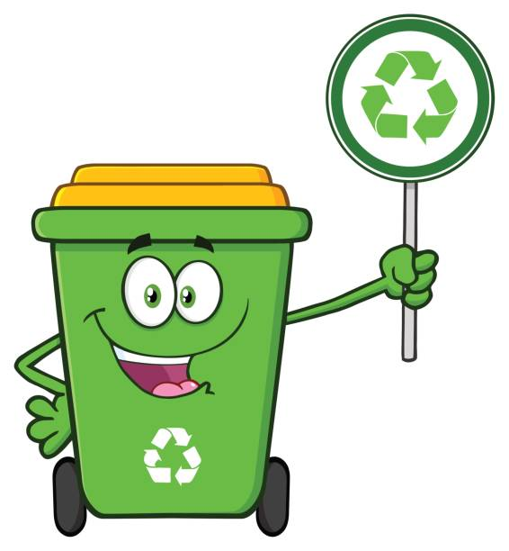

How You Can Help!
Now you know about pollution, you can learn how to save the Earth from pollution! The main way you can help is recycling plastic, cans, and rubbish. Recycling means taking old things we don’t need anymore and turning them into something new! Instead of throwing everything in the bin, we can save paper, plastic, glass, and metal so they can be used again. This helps keep the Earth clean and happy.
How to Recycle!
-
Learn the Recycling Symbol ♻️
This means something can be recycled! -
Sort Your Rubbish
Put paper, plastic, metal, and glass in the recycling bin – not the rubbish bin -
Rinse Before You Recycle
Wash out bottles, cans, and containers so they’re clean before you toss them in -
Flatten Boxes
If you have cardboard boxes, flatten them to save space in the bin. -
Ask Before Recycling
If you're not sure something can be recycled, ask a grown-up or check the label. -
Reuse When You Can
Use both sides of paper, turn old jars into pencil holders, or make crafts from boxes! -
Reduce Plastic Use
You can use a metal water bottle instead of a plastic water bottle! -
Have Fun Recycling!
Colour-code bins, make crafts, or turn it into a game!